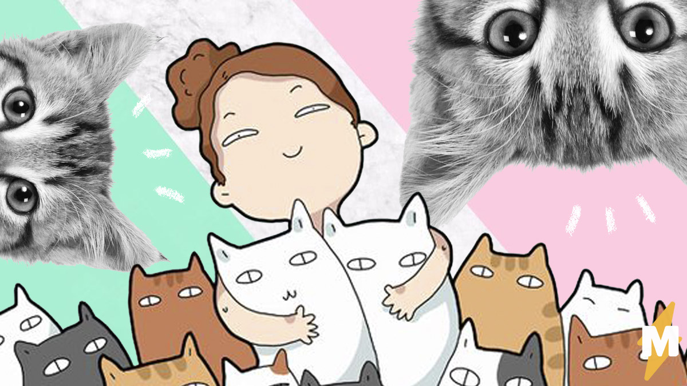
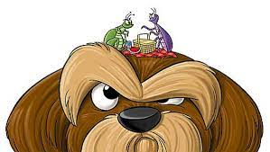
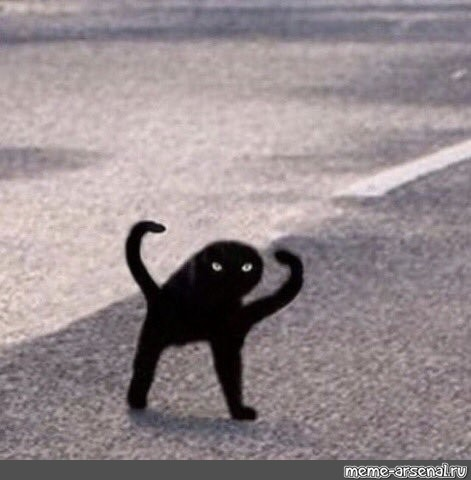

Самое интересное о котиках
Кошки считаются одними из самых загадочных животных в мире. Люди дружат с пушистыми питомцами более 8000 лет и не устают открывать о кошках всё новые факты.

Факты из прошлого
- Самая древняя домашняя кошка была обнаружена на Кипре в могиле, которой свыше 9,5 тысячи лет.
- в Древней Греции они были огромной редкостью и ценились дороже, чем львы.
- Если в средневековой Европе кошка считалась символом чёрной магии, то в России она никогда не преследовалась за связь с дьяволом.
Привет от ученых: 3 научных факта
РИА Новости во Всемирный день кошек представили подборку самых интересных, забавных и странных научных исследований о котах и кошках, домашних и не очень, а также о людях рядом с ними. Подробнее можно прочитать в статье, а здесь будет представлено 3 самых интересных.
-
Шнобелевские идеи
Кошки и соответствующие исследования неоднократно становились поводом для вручения их автором "шнобелевок". Так, наиболее знаменитой остается работа французских биологов, которые раз и навсегда разрешили споры о том, чьи блохи прыгают выше, собачьи или кошачьи — в пользу первых.

-
Кто в доме хозяин
Ученые записали мурчание 10 кошек в разных обстоятельствах и дали послушать записи 50 добровольцам. Исследователям с помощью манипуляций с записанным звуком удалось найти и выделить"мелодию" в кошачьем мурчании, которая, похоже, вызывает у человека инстинктивное желание покормить кота. Журнал Annals of Improbable Research в своей заметке отмечает, что похоже, даже если у вас никогда не было кошки, вы все равно можете стать жертвой их природного психотронного оружия
.
-
Говорят не повезет
Ну не счастливчики ли они, коты тёмной окраски?
Эдуардо Эйзирик из Национального института рака США.

Ученые вообще не склонны верить в приметы, однако в случае черных котов и кошек у них есть и вполне научные контраргументы. Мутации, вызывающие у кошачьих черную окраску, придаёт организму устойчивость к некоторым опасным заболеваниям, в частности к вирусу иммунодефицита.

А теперь о важном
Порой хозяева, видя отличный аппетит животного, не могут удержаться, чтобы не положить ему дополнительную порцию корма. Скажем прямо, от такой реакции очень трудно удержаться. Поверьте, такая любовь убивает. И если вы желаете добра кошке, не перекармливайте ее.
Таблица определения упитанности котика
|
Недостаток веса |
Идеальный вес |
Избыток веса |
Ожирение |
| Ребра |
Выступают и хорошо видны |
Не видны но хорошо прощупываются |
Прощупываются с большим трудом |
Не прощупываются |
| Талия |
Хорошо различима |
Различима |
Почти не различима |
Нет, объем живота значительно увеличен |
| На грудной клетке |
Не прощупывается жировой слой |
Прощупывается тонкй жировой слой |
Прощупывается жировой слой |
Прощупывается хорошо выраженный жировой слой |
Чтобы котик был в форме нужно пользоваться простой форулой рассчета количества корма в день:
Расчет калорий для кошек массой до 2 килограмм:
ПЕ (ккал/день) = 1,4 [70 х (масса (кг.))0,75]
Расчет калорий для кошек массой 2 и более килограмм:
ПЕ (ккал/день) = 1,4 [30 х (масса (кг.)) + 70]
Кроме того корм нужно выбрать правильно. Обратите внимание на состав, нет ли там Е127, E321, E320, E324, E223(известный как Na2S2O5)
Для улучшения качества статей пройдите небольшой опрос!